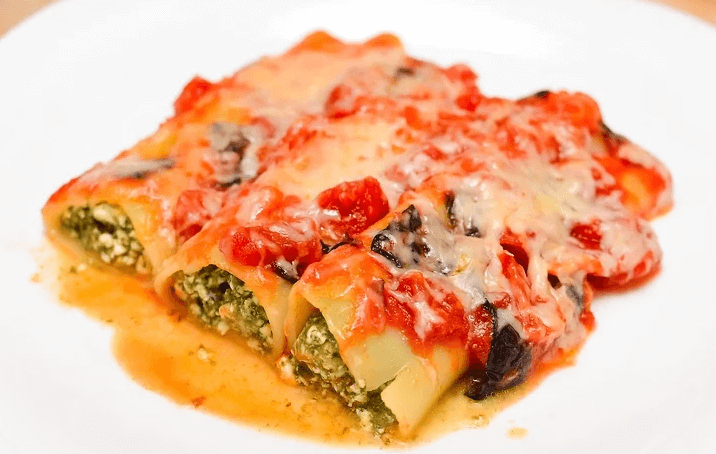

Cannelloni Florentine

Description
Spinach -Most people don’t like it and hence tend to avoid it in all forms in any meal. The Cannelloni Florentine is the perfect way to sneak spinach in the must menu of your meal. As they say – “Good memories are stimulated by aromas”this appetizing dish is no exception to it and will never let your memories fade away.
Epicures get ready to cease your craving with this Italian cannelloni recipe. Walk into your kitchen, toss some ingredients together and surprise your kids, family & friends with the scrumptious homemade cannelloni recipe.
The Cannelloni Florentine can serve to give a boost the house parties, pot lucks or dinner. It’s time to try your hands on the most flavorsome vegetarian cannelloni recipe.
Ingredients
- 1 (8 ounce) package cannelloni pasta
- 8 ounces ground veal
- 2 carrots, chopped
- ½ stalk celery, chopped
- ½ yellow onion, chopped
- 10 ounces spinach, rinsed and chopped
- 1 ¼ teaspoons salt
- 1 ¼ teaspoons ground black pepper
- 2 tablespoons olive oil
- 1 cup dry white wine
- 1 cup heavy cream
- 1 cup roma (plum) tomatoes, diced
- ½ cup grated Parmesan cheese
- 2 teaspoons Italian seasoning
- 2 tablespoons chopped fresh basil
- 1 (16 ounce) can Italian-style diced tomatoes
- 2 tablespoons extra virgin olive oil
- 2 cloves garlic, minced
- 1 onion, chopped
- 1 teaspoon salt
- 1 teaspoon ground black pepper
- 4 leaves fresh basil, chopped
Steps
-
Bring a large pot of lightly salted water to a boil. Add pasta and cook for 8 to 10 minutes or until al dente; drain, separate shells, and set aside.
-
Preheat oven to 500 degrees F (260 degrees C). In a 9 x 13 baking dish, combine veal, carrots, celery, chopped half onion and spinach. Stir well. Stir in 1 1/4 teaspoon salt, 1 1/4 teaspoon pepper, 2 tablespoons olive oil and white wine. Place in oven and roast until veal is brown and vegetables are soft, 30 to 40 minutes. Stir frequently. If meat begins to smoke, reduce heat to 400 degrees (200 degrees C).
-
Let meat mixture cool 15 minutes, then process in food processor until finely chopped. Return to pan and stir in cream, Roma tomatoes, Parmesan, Italian seasoning and 2 tablespoons chopped fresh basil. Bake 20 minutes more. Remove from oven and let cool.
-
While meat mixture is cooling enough to handle, make tomato sauce. Puree canned tomatoes with their juice in food processor until smooth. In large skillet over medium heat, heat 2 tablespoons virgin olive oil. Saute garlic and chopped onion until soft. Stir in pureed tomato, 1 teaspoon salt and 1 teaspoon pepper. Cook 5 to 10 minutes, or until no longer watery. Add four chopped basil leaves and cook 1 minute more.
-
Reduce oven temperature to 350 degrees F (175 degrees C). Stuff pasta shells with cooled meat mixture, 2 to 3 tablespoons per shell. Place shells in clean 9 x 13 baking dish. Pour tomato sauce over shells and bake 20 minutes, or until sauce is bubbly.